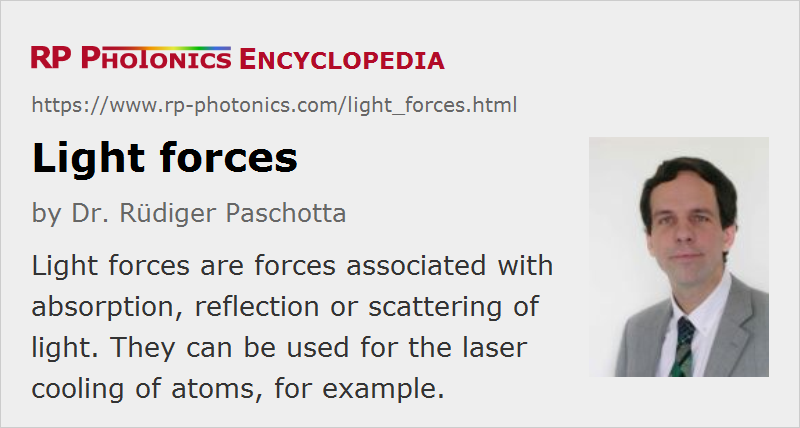

Light Forces
Definition: forces associated with absorption, reflection or scattering of light
German: Lichtkräfte
Categories: quantum optics, methods
How to cite the article; suggest additional literature
Author: Dr. Rüdiger Paschotta
Photons carry not only energy, but also momentum. As a consequence, momentum is transferred (i.e., a force is exerted) when a particle absorbs light or alters its direction (e.g. by refraction). Such light forces are responsible for e.g. the tails of comets, which always occur on the side opposite to the Sun and consist of dust particles dragged away by the light.
Light forces have been first considered by the astronomer Johannes Kepler. James Clerk Maxwell, the creator of the famous Maxwell equations, has later substantially developed further the understanding of light forces. They have later been experimentally proven by the Russian physicist Pyotr Lebedev in 1900 [1].
In simple cases, a light force is described as radiation pressure, exerting a force in the propagation direction of the absorbed light. However, the effective force can also have a direction which is different from the propagation direction. For example, refraction of light in a transparent sphere can redirect the light so that a force perpendicular to a (e.g. Gaussian) laser beam occurs, which pulls the sphere into the region of highest optical intensity.
When calculating light forces on atoms, it is often more convenient to derive the light forces from the gradient of a potential which arises from the interaction of the atoms with the light field. Such conservative forces arise e.g. from the dipole interaction with a laser beam the frequency of which is lower or higher than that of a resonant transition of the atom; the force is then directed towards locations with higher or lower optical intensity, respectively. A red-detuned laser beam can be used for trapping.
Non-conservative (dissipative) light forces are also important for trapping, because they serve to dampen the motion of a trapped particle. This is also called laser cooling.
Light forces are relevant in a number of very different situations:
- They play an essential role in the formation of tails of comets (see above), as already suggested by Johannes Kepler in 1619.
- They can be used for trapping, cooling and manipulating particles, e.g. with optical tweezers or in levitating traps, in high-power lasers (where dust particles can be captured and pulled towards cavity mirrors), or in optical clocks.
- They can be used as intracavity “photon thrusters” which are seriously considered as a tool for stabilizing the relative positions of satellites within satellite arrays for application e.g. in astronomy, geophysical monitoring, mapping, imaging, and surveillance.
- Unwanted light forces occur in interferometers for gravitational wave detection, where they can disturb the test masses.
Questions and Comments from Users
Here you can submit questions and comments. As far as they get accepted by the author, they will appear above this paragraph together with the author’s answer. The author will decide on acceptance based on certain criteria. Essentially, the issue must be of sufficiently broad interest.
Please do not enter personal data here; we would otherwise delete it soon. (See also our privacy declaration.) If you wish to receive personal feedback or consultancy from the author, please contact him e.g. via e-mail.
By submitting the information, you give your consent to the potential publication of your inputs on our website according to our rules. (If you later retract your consent, we will delete those inputs.) As your inputs are first reviewed by the author, they may be published with some delay.
Bibliography
| [1] | P. Lebedev, “Untersuchungen über die Druckkräfte des Lichtes”, Annalen der Physik 311 (11), 433 (1901) |
| [2] | T. W. Hänsch and A. L. Schawlow, “Cooling of gases with laser radiation”, Opt. Commun. 13, 68 (1975), doi:10.1016/0030-4018(75)90159-5 |
| [3] | D. J. Wineland and W. M. Itano, “Laser cooling of atoms”, Phys. Rev. A 20 (4), 1521 (1979), doi:10.1103/PhysRevA.20.1521 |
| [4] | J. Ye et al., “Trapping of single atoms in cavity QED”, Phys. Rev. Lett. 83 (24), 4987 (1999), doi:10.1103/PhysRevLett.83.4987 |
| [5] | C. Savage, “Introduction to light forces, atom cooling, and atom trapping”, http://arxiv.org/abs/atom-ph/9510004 |
| [6] | D. Van Thourhout and J. Roels, “Optomechanical device actuation through the optical gradient force” (review article), Nature Photon. 4, 211 (2010), doi:10.1038/nphoton.2010.72 |
| [7] | H. Li et al., “Optical pulling forces and their applications”, Advances in Optics and Photonics 12 (2), 288 (2020), doi:10.1364/AOP.378390 |
See also: radiation pressure, optical tweezers, laser cooling, The Photonics Spotlight 2006-10-22
and other articles in the categories quantum optics, methods
|  |
If you like this page, please share the link with your friends and colleagues, e.g. via social media:
These sharing buttons are implemented in a privacy-friendly way!